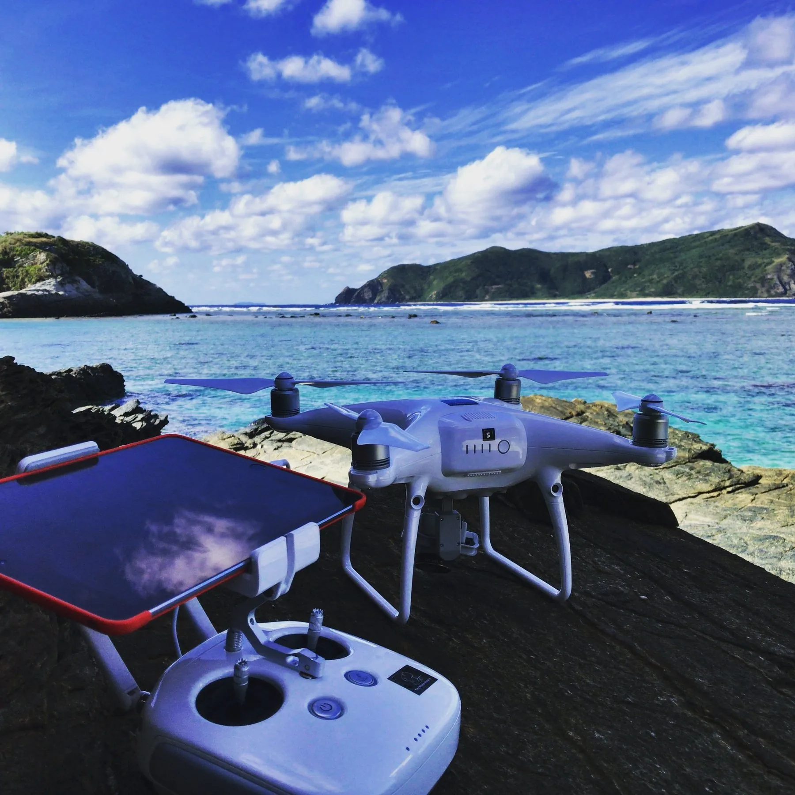
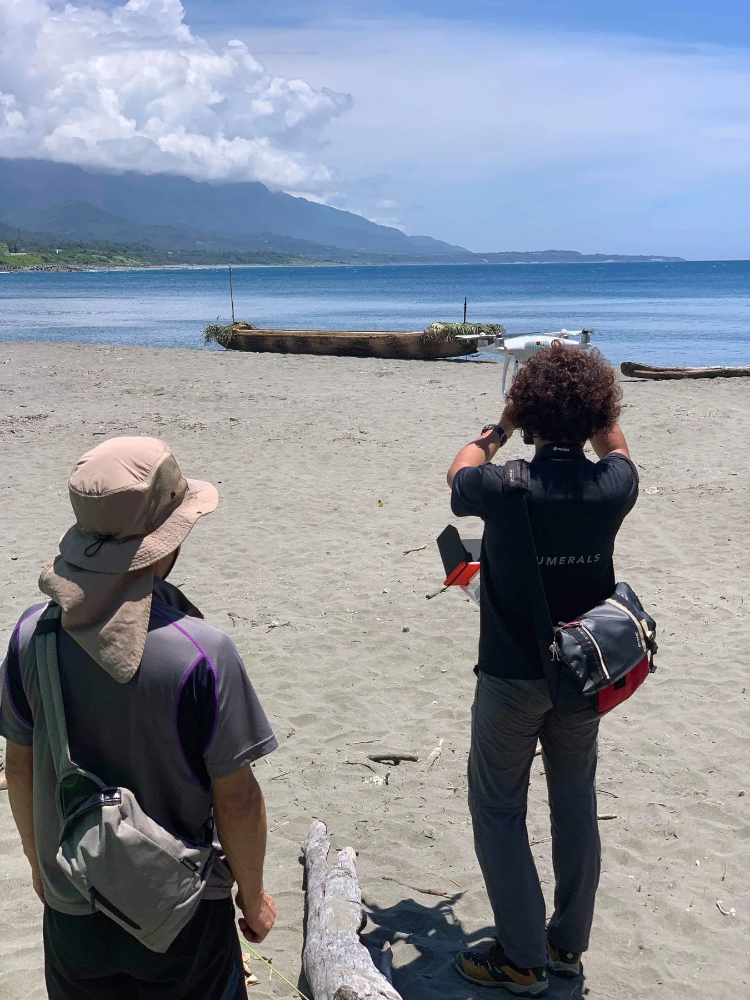
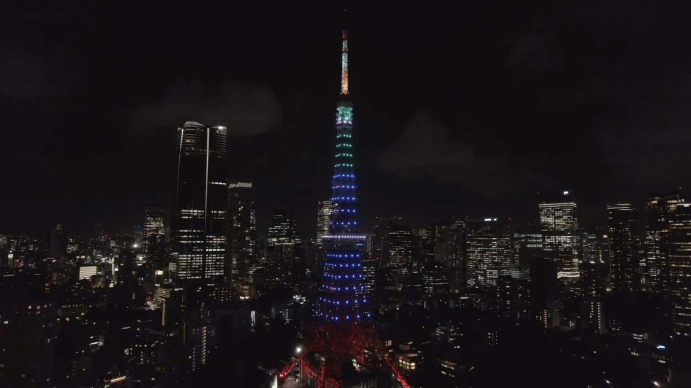
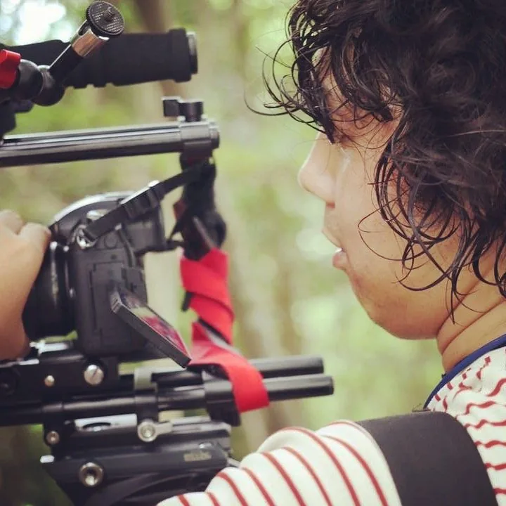

Project to Fully Enjoy National Parks
Drone cinematography across seven national parks in Japan.
We seek to convey the feelings of the people we film.
Documentaries made with care for the people and stories in front of the camera.

Bizen Osafune, a historic center of Japanese swordmaking.
A sacred sword-forging ritual held for the first time in a century.
A year devoted to crafting a sword as an offering.
Through a swordsmith's words — "A sword is not a weapon" — the film reconsiders the spirit and humanity that Japan may have begun to forget.
National parks, museums, municipalities, and businesses.
On location, behind the camera, in the edit suite — and sometimes composing the music too.

Drone cinematography across seven national parks in Japan.

Drone and 360° cinematography for a film, museum exhibition, and NHK program.

Event cinematography and nighttime drone footage of Tokyo Tower.
Small in scale, strong in purpose.
An independent home for filmmaking and music production.

Yuki Nishiyama directs, edits, and scores documentary films while also working on video production, cinematography, drone filming, and VR/360° projects for government agencies, museums, and local communities.
ABOUT / BIOGRAPHY →